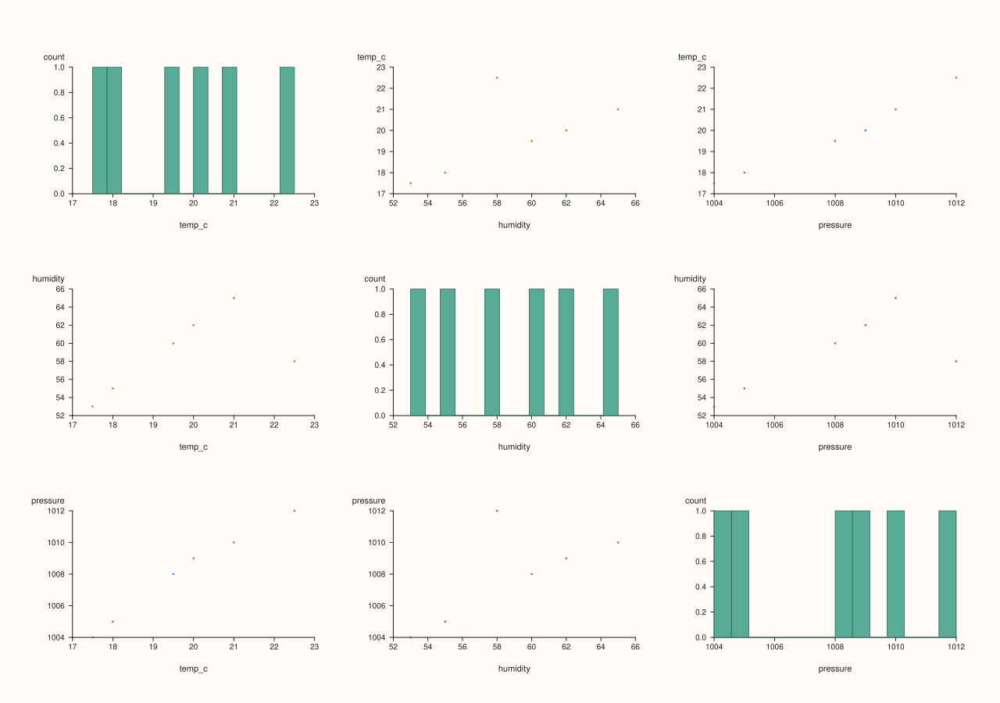
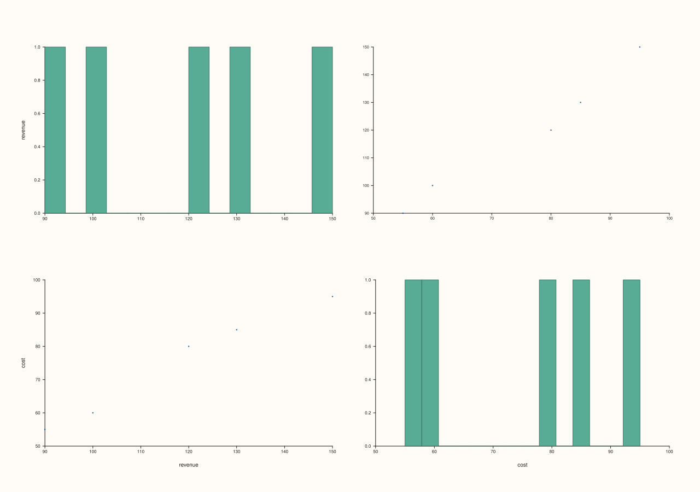
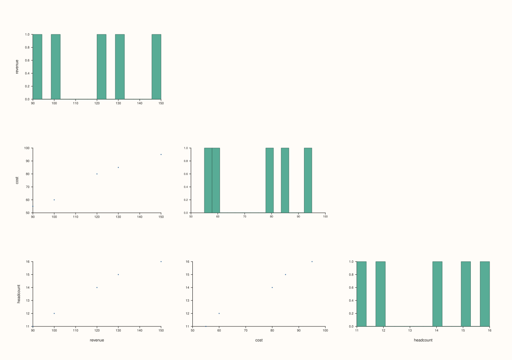
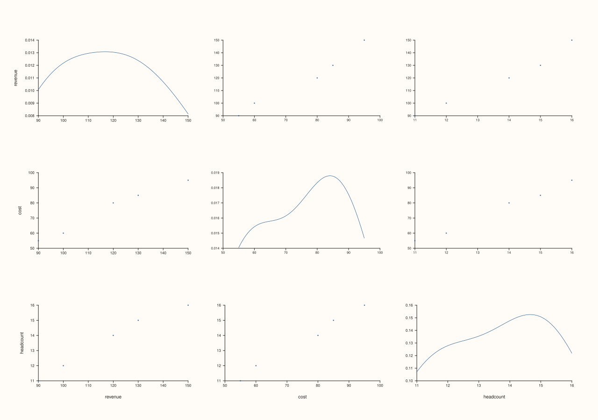

DataFramePlotAccessor::scatter_matrix¶
Back to DataFramePlotAccessor API Reference
Signatures¶
DataFramePlotAccessor::scatter_matrix(pluss::msharp::RangeView::Of<std::string_view> features = {}) const -> pluss::pl::Studio
DataFramePlotAccessor::scatter_matrix(pluss::msharp::RangeView::Of<std::string_view> features,
ScatterMatrixTriangle triangle) const -> pluss::pl::Studio
DataFramePlotAccessor::scatter_matrix(pluss::msharp::RangeView::Of<std::string_view> features,
const ScatterMatrixPlotOptions& options) const -> pluss::pl::Studio
What It Does¶
Builds a grid of every pairwise scatter plot among the selected numeric features — an
N×N grid of small panes, where off-diagonal cell (i, j) is a scatter of feature i
against feature j, and diagonal cells show each feature’s own distribution (a histogram
by default). This is the classic “pairs plot” for eyeballing every two-way relationship in
a small-to-medium numeric feature set at once.
Important
At least two numeric features are required
Unlike box()/hist()/etc.’s “any nonzero count of numeric features is fine,” a scatter
matrix is inherently pairwise — fewer than two numeric features throws
"DataFrame::plot().scatter_matrix: need at least two numeric features".
Note
Feature selection here doesn’t validate non-numeric names — it filters instead
Unlike box()/hist()/corr_heatmap(), an
explicit features list here is first narrowed to the requested columns and then filtered
down to only the Series-kind ones — passing a non-numeric feature name doesn’t throw,
it’s simply excluded from the matrix. If that filtering leaves fewer than two features, the
“at least two” check above still throws.
Parameters¶
features (RangeView<std::string_view>, default {})
Features to scope the matrix to before filtering down to the numeric ones. Empty (the
default) considers every feature in the frame.
triangle (ScatterMatrixTriangle, two-argument overload)
Full (the default elsewhere too), Lower, or Upper — restricts the grid to only the
lower or upper triangle (plus the diagonal) instead of drawing every cell twice
((i, j) and (j, i) are mirror images of the same pairwise relationship).
options (ScatterMatrixPlotOptions)
cpp struct ScatterMatrixPlotOptions { bool corner{false}; pluss::pl::flash::PairPlotOptions pair{}; };
corner = true is a shorthand: if pair.triangle is still at its default (Full), it
gets switched to Lower automatically — a “corner-style” pairs plot with the diagonal
at the top-left and only the lower triangle filled in. pair is the full underlying
PlussPl PairPlotOptions struct (triangle, diagonal kind, point vs. regression cells,
grid sizing, point limits, and more); only the fields most relevant here are called out
on this page — the rest are documented in PlussPl’s own reference.
Returns¶
pluss::pl::Studio
A figure containing the full grid of pairwise panes.
Examples¶
Example 1. No explicit features: every numeric feature in the frame is included.
using namespace pluss::table;
auto metrics = DataFrame({
{"revenue", Thread(pluss::make_series({100.0, 120.0, 90.0, 150.0, 130.0}))},
{"cost", Thread(pluss::make_series({60.0, 80.0, 55.0, 95.0, 85.0}))},
{"headcount", Thread(pluss::make_series({12.0, 14.0, 11.0, 16.0, 15.0}))},
});
auto chart = metrics.plot().scatter_matrix();
chart.show();
A 3×3 grid: six off-diagonal scatter cells (revenue×cost, revenue×headcount,
cost×headcount, each appearing twice, mirrored) plus three diagonal histogram cells.

Example 2. An explicit feature subset via RangeView.
std::vector<std::string_view> names{"revenue", "cost"};
auto chart = metrics.plot().scatter_matrix(pluss::msharp::RangeView::Of<std::string_view>(names));
chart.show();
A 2×2 grid: two off-diagonal scatter cells (mirror images of the same revenue vs cost
relationship) plus two diagonal histograms.

Example 3. triangle = Lower: only the lower triangle and diagonal are drawn.
auto chart = metrics.plot().scatter_matrix({}, pluss::table::ScatterMatrixTriangle::Lower);
chart.save_pdf("metrics_lower.pdf");
Each pairwise relationship now appears exactly once instead of twice.

Example 4. An explicit ScatterMatrixPlotOptions, using the corner shorthand instead of
setting pair.triangle directly.
ScatterMatrixPlotOptions options;
options.corner = true;
auto chart = metrics.plot().scatter_matrix({}, options);
chart.show();
Since options.pair.triangle was left at its default Full, corner = true switches it to
Lower automatically — equivalent to Example 3, but expressed through the corner flag.

Example 5. Reaching into the underlying PairPlotOptions for a field this accessor doesn’t
wrap directly — here, switching the diagonal cells from histograms to density curves.
ScatterMatrixPlotOptions density_diag;
density_diag.pair.diag_kind = pluss::pl::flash::PairPlotDiagKind::Density;
auto chart = metrics.plot().scatter_matrix({}, density_diag);

Example 6. Fewer than two numeric features throws.
auto single = DataFrame({
{"revenue", Thread(pluss::make_series({100.0, 120.0, 90.0}))},
});
try {
auto bad = single.plot().scatter_matrix();
} catch (const std::exception& e) {
std::cout << e.what();
}
Output¶
DataFrame::plot().scatter_matrix: need at least two numeric features
Notes¶
At least two numeric features are required after filtering — see the important callout above.
Non-numeric feature names in an explicit
featureslist are silently filtered out instead of throwing — see the note above (contrast most other methods on this accessor).corner = trueonly overridespair.triangleif it’s still at its defaultFull; an explicitly setpair.triangleis left alone.Returns a
pluss::pl::Studio— seeline()’s important callout for how to view or save the result.
See Also¶
DataFramePlotAccessor::corr_heatmap: a single correlation coefficient per pair instead of a full scatter cell.DataFramePlotAccessor::scatter: one chosen x/y pair, with an optional hue feature this method doesn’t support.DataFramePlotAccessor::parallel/radviz: other multivariate-relationship views for more than two features at once.